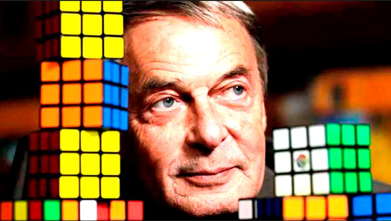

"El cubo de rubik es el juguete mas vendido de la historia."
"El cubo tiene 43.252.003.274.489.856.000 de permutaciones posibles."
"Su creador no era capaz de resolverlo cuando lo invento."
Este es su creador:
El Cubo de Rubik, creado por Ernő Rubik, es un rompecabezas mecánico tridimensional que ha fascinado a personas de todas las edades y habilidades desde su invención en 1974.
Historia
El Cubo de Rubik fue inventado por el arquitecto húngaro Ernő Rubik en 1974. Inicialmente llamado "Cubo Mágico", Rubik lo creó como una herramienta para ayudar a sus estudiantes a comprender mejor los conceptos del espacio tridimensional. En 1980, el Cubo de Rubik se lanzó a nivel mundial y rápidamente se convirtió en un fenómeno cultural.
Con más de 450 millones de unidades vendidas hasta 2020, es el rompecabezas más vendido y uno de los juguetes más populares de todos los tiempos.
El Cubo de Rubik se convirtió en un éxito instantáneo, desafiando a millones de personas en todo el mundo.
El cubo consta de seis caras con colores uniformes y se resuelve al alinear cada cara en un solo color. A pesar de sus millones de combinaciones posibles, solo una configuración es correcta. Se han lanzado ediciones especiales para conmemorar aniversarios, incluyendo una versión de 25 años con una cara reflectante y otra de 30 años hecha de madera.
Desde entonces, ha sido un icono de la creatividad, la lógica y el ingenio humano.